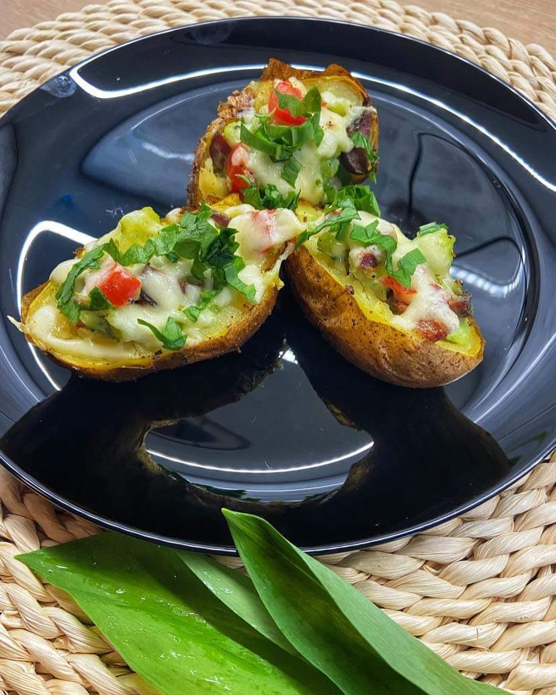

Plnené zemiačky 🥔🥔
Potrebujeme:
- 4 veľké zemiaky
- 100 g bieleho jogurtu
- 1 ks klobaska
- jarná cibuľa alebo medvedí cesnak
- 5 ks cherry paradajky
- soľ, čierne korenie, grilovacie korenie
- 5 PL olivový olej
- nastrúhaný syr
Postup:
Zemiaky dôkladne umyjeme, poprepichujeme vidličkou a potrieme olivovym olejom a grilovacim korením. Celé zemiaky pečieme približne 70 minút pri teplote 190 °C. Následne ich pozdĺžne rozrežeme a opatrne vydlabeme. Vnútro zemiakov ešte roztlačíme vidličkou a zmiešame s jogurtom a medvedím cesnakom, klobaskou, paradajkami a dochutime soľou a korením. Zmes premiešame a naplníme zemiaky. Na vrch ešte nastrúhame syr a dáme zapiecť ešte na 10 minút.
#food #zemiaky #fitness #fitrecepty #lunch #obedik #foodporn #dnesjem #foodphotography #tasty #tastyfood #instagram #inspiration #inspirationfood #foodstylist #foodstyling